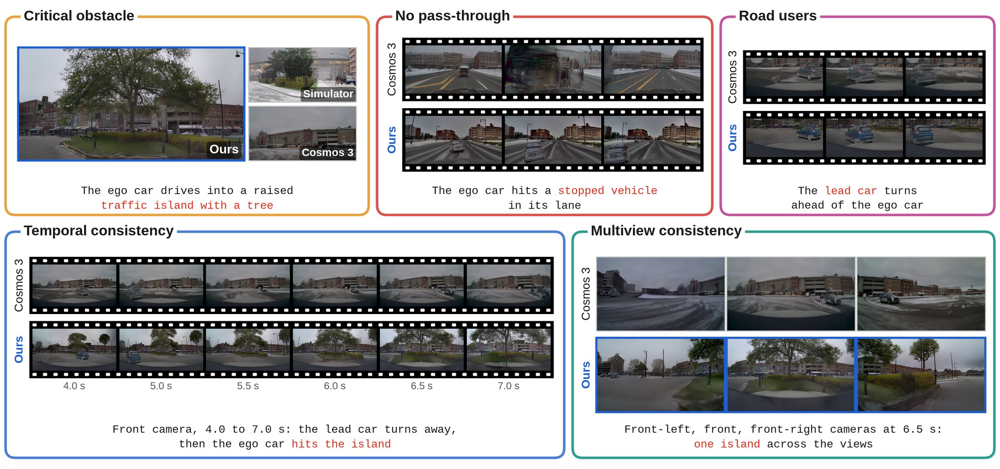
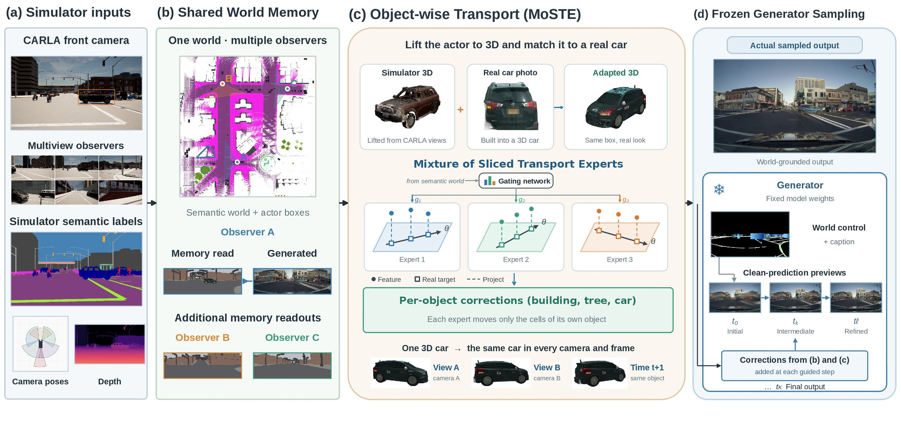
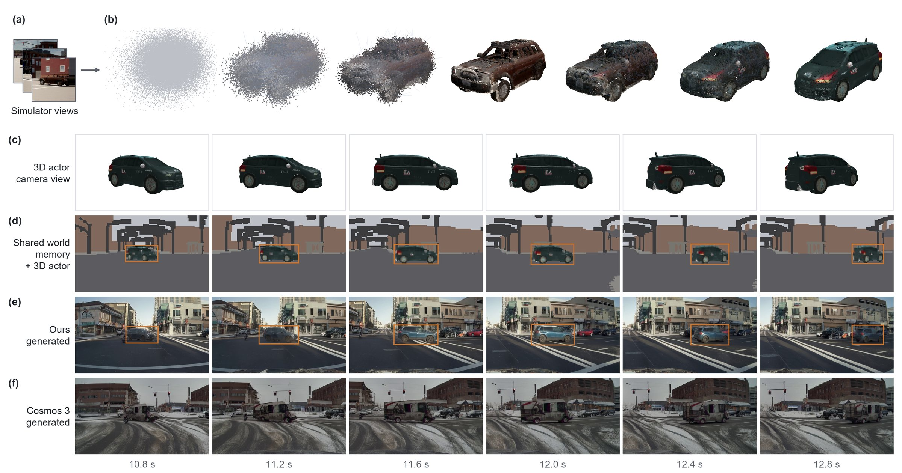
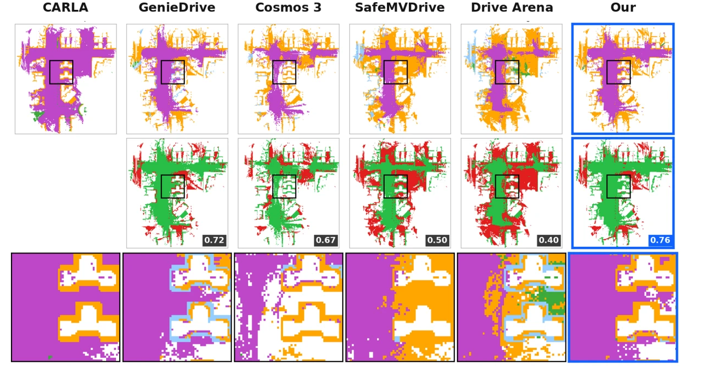
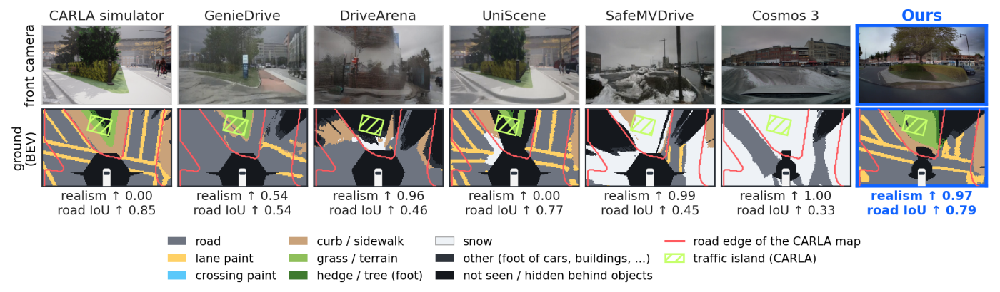

Rare critical driving scenes, from simulator to the real world.
THÁI Lab · University of Florida
Crashes and near misses are rare in real driving logs, which is exactly when autonomous vehicles need data most. We systematically generate rare, safety-critical scenes in simulators (CARLA, BeamNG) and transfer them to photorealistic real-world video, keeping the scene faithful across all six cameras (multiview consistency), over time (temporal consistency), and around the critical event itself (event preservation), so the obstacle that causes the crash stays where the simulator put it.
Four numbers from the paper's evaluation against GenieDrive, DriveArena, Cosmos 3 and SafeMVDrive.
Five failure modes of a frozen video generator on simulator layouts, and the same moments with our guidance.

Every camera reads the same shared world memory, so the six views are generated together and show one consistent scene. Pick a scene below: different cities, day and night, three vehicles at one intersection, a roadside camera, a crash, and a second simulator.
The video generator is never retrained. Corrections computed from the simulator's world are added at each guided sampling step.

The simulator's semantic world and actor boxes are stored once. Every camera, and every vehicle observing the scene, reads the same memory, so they all see the same buildings, trees and road.
A gating network routes each region to an object expert (building, tree, car). Each expert moves only its own object's features toward real examples with sliced optimal transport.
The generator keeps its weights. It receives the world control and caption, and the corrections from (b) and (c) are added at each guided step.
Optimal transport moves a noise point cloud onto a 3D model of the simulator's vehicle, then adapts its shape and texture toward a real car. The adapted actor is placed in the shared world memory and seen consistently from every camera.
The transport animation: noise → simulator vehicle → adapted real-looking vehicle.

(a) Simulator views of the source vehicle. (b) Transport from noise to the 3D model of the source vehicle, then adaptation of shape and texture. (c) The adapted actor from the camera viewpoint. (d) Shared world memory with the actor; orange boxes mark the vehicle. (e) Our generated frames. (f) Cosmos 3. Every 0.4 s from 10.8 to 12.8 s.
We segment each generated video, project the labels onto the simulator's 3D voxels, and compare the resulting bird's-eye view with CARLA's own.

Top: semantic BEV maps (purple road, orange building, green vegetation, light blue sky, white unobserved). Middle: cell-wise agreement with CARLA (green match, red mismatch) and the agreement score. Bottom: a 56 m × 56 m view with two T-shaped buildings. Ours keeps the building outlines and the surrounding road (0.76).

Ground layout around the traffic island. The rendered CARLA frame keeps the road layout but looks synthetic (realism 0.00). Cosmos 3 and SafeMVDrive look real but cover the road in snow (road IoU 0.33 and 0.45). Ours is both realistic (0.97) and keeps the road and the island (road IoU 0.79).
TABLE I
Object preservation, driving-policy agreement, distributional realism, and temporal quality. (a) Missing and hallucination rates (%), trajectory preservation error (TPE, m), and decision change rate (DCR, %) on 252/159 obstacle-present/absent units. (b) Additional object-error and policy-TPE evaluation. (c) Distributional realism, temporal consistency, and lane preservation. Slash-separated values denote obstacle-present/absent. KID and CMMD are scaled by 103. Bold indicates the best result for each metric and condition; ties are included. Arrows indicate the preferred direction.
(a) Object Preservation and Driving-Policy Agreement
| Method | N+/N− | Missing ↓ | Hall. ↓ | UniAD | SimLingo | LEAD | DriveTransformer | ||||
|---|---|---|---|---|---|---|---|---|---|---|---|
| TPE ↓ | DCR ↓ | TPE ↓ | DCR ↓ | TPE ↓ | DCR ↓ | TPE ↓ | DCR ↓ | ||||
| GenieDrive | 252/159 | 22.2 | 0.0 | 1.30/1.23 | 4.4/4.4 | 4.08/4.12 | 35.4/43.3 | 1.37/1.44 | 26.3/50.0 | 1.02/1.07 | 7.5/23.9 |
| DriveArena | 252/159 | 29.4 | 0.0 | 1.64/1.05 | 7.1/9.4 | 3.73/3.23 | 35.4/33.3 | 1.93/1.39 | 28.3/40.0 | 1.28/1.44 | 9.1/29.6 |
| Cosmos 3 | 252/159 | 20.6 | 2.5 | 1.80/1.06 | 0.8/5.0 | 4.58/3.46 | 35.7/50.3 | 2.21/1.93 | 39.3/47.2 | 1.37/1.46 | 11.9/31.4 |
| SafeMVDrive | 252/159 | 45.2 | 63.5 | 1.24/1.31 | 4.0/17.0 | 3.91/5.22 | 32.3/56.7 | 1.81/1.48 | 33.3/43.3 | 1.20/1.27 | 10.7/28.9 |
| AnisoTransfer (Ours) | 252/159 | 12.3 | 0.0 | 1.50/1.21 | 0.0/11.7 | 3.63/3.21 | 31.0/30.0 | 2.23/1.56 | 46.9/31.7 | 1.01/1.06 | 9.6/16.7 |
(b) Additional Object and Trajectory Evaluation
| Method | Obj.Err/Hall. ↓ | UniAD ↓ | SimLingo ↓ | LEAD ↓ | DriveTrans. ↓ |
|---|---|---|---|---|---|
| GenieDrive | 10.0/3.7 | 1.06/0.80 | 2.51/4.13 | 1.33/2.07 | 1.07/1.71 |
| DriveArena | 35.6/1.9 | 1.25/0.88 | 3.19/3.59 | 1.70/2.10 | 1.96/1.22 |
| Cosmos 3 | 12.2/0.0 | 1.60/0.78 | 3.82/4.62 | 1.99/2.27 | 1.46/1.39 |
| SafeMVDrive | 44.4/37.0 | 1.66/1.06 | 2.93/4.88 | 1.91/2.19 | 0.90/1.28 |
| AnisoTransfer (Ours) | 9.1/0.0 | 1.00/0.95 | 2.02/2.69 | 0.99/1.47 | 1.30/1.20 |
(c) Distributional Realism and Temporal Quality
| Method | FID ↓ | KID ↓ | CMMD ↓ | FVD ↓ | Warp ↓ | tLPIPS ↓ | Lane F1 ↑ |
|---|---|---|---|---|---|---|---|
| GenieDrive | 124.0 | 86.56 | 3.828 | 1435.9 | 0.113 | 0.101 | 0.252 |
| DriveArena | 107.9 | 76.32 | 3.317 | 1930.5 | 0.209 | 0.166 | 0.147 |
| Cosmos 3 | 181.4 | 190.97 | 3.787 | 1765.1 | 0.102 | 0.059 | 0.016 |
| SafeMVDrive | 148.4 | 142.98 | 3.200 | 1943.9 | 0.168 | 0.125 | 0.079 |
| AnisoTransfer (Ours) | 104.1 | 79.95 | 3.093 | 1365.3 | 0.092 | 0.060 | 0.191 |
| CARLA render | 178.5 | 111.48 | 5.275 | – | – | – | – |
| Real vs. real | 36.8 | -0.02 | 0.009 | 209.6 | – | – | – |